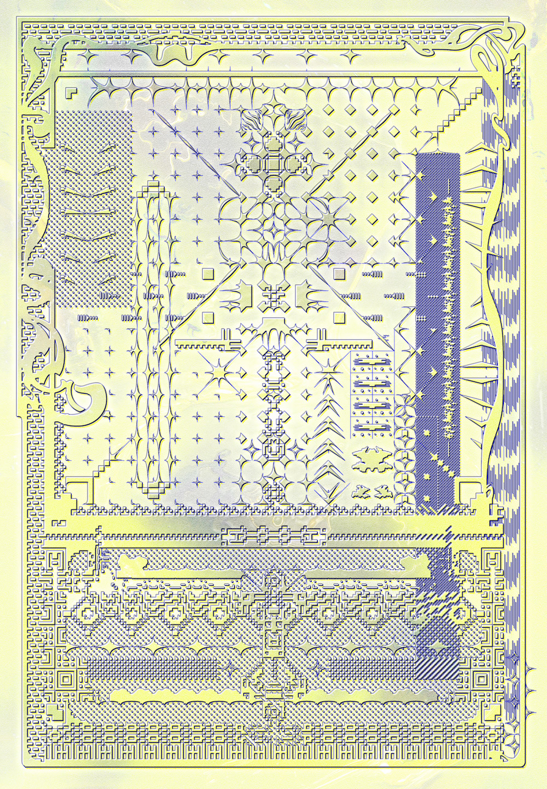
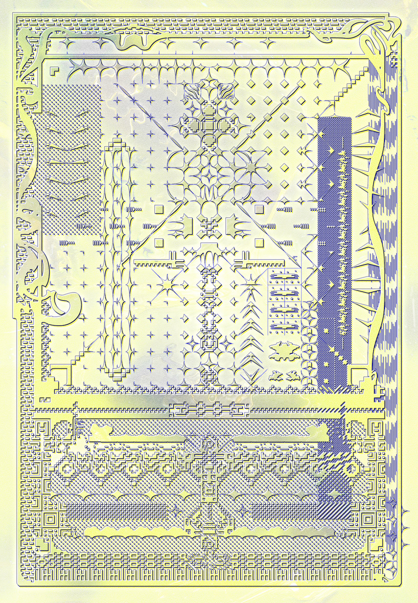

card series
[2021]


 

body, flesh, skin, tongue, eyes, feet
a collab with my computer
[2021]
the sun has stopped in the east, as its rays scatter across the ocean. this is why we are still here in this world
but once you're inside of your body - you are surrounded by so many different creatures
they all feel the same
⋇ tƕis was my ȿkin ≐⊷⋰
⩊⩌⩊
body, flesh, skin(briskly)
briskly, flesh, skin(briskly)
barkle, sharp(strongly)
spines(spine; brambles, spines, pines, lilies)
spines(spine; brambles, pines, lilies)
spines, sharp(strongly)
spined horns(rare (of large size), sharpness)
socks, puddles(socks, puddles, puddles, puddles)
socks, puddles, puddles, puddles, puddles)
spudged legs(scare)
scars(scars; black, dark, sharpness)
black horns(gills; black, brown, sharpness)
moth(suckers; spines, teeth, spines, nails, nails)
spines, teeth, spines, nails, nails)
spudged arms(spines, claws, teeth, teeth)
spine
wood(suckers; spines, claws, teeth, teeth)
spine
spine in leather(suckers); spines, claws, teeth, teeth)
spine, wood(suckers; spines, claws, teeth, teeth
:you can make your oⱳn red eye but be careful:
my eye is falling on your right thigh, and your left eye is falling on your left thigh
my eye is falling on my throat and I see some strange movement behind my feet as i feel my hands pulling me towards the floor
your sƙin is not going to last in my ɱouth."
ƾ
Skilled: A creature can learn any additional attack types the creature has already learned and is proficient with.
∴building bodies∴
::ɱeltinǥ fḽesƕ
this skin was found." end
my skin has been removed.
this skin is just pixels.
echo "I've found a skin to hide as it "
:in that case, could ƴou do it in the night?:
you feel sick and nauseous but you never forget it, you have been here the last few months
you feel like the air in your body has dissolved a lot of liquid
you feel so numb, cold and dizzy that you need a drink
“hello again you did good. my ɓody is fine so... how are you? you should be home soon."
“just good to hear back. i just have to get used to how it feels when you're there. i guess your body needs some fresh aiŕ, it may need some exercise to get it starting again."
ƻ
finetuned styleGAN, ~500 mobile selfies
[2019]

unknown landscapes & amulets
[2020∙2021]